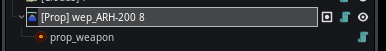

Module: script_component
Documentation last edited: October 23, 2025 at 14:33 UTC
Description

Script Components (Скриптовые Компоненты) - это ноды, которые расширяют функциональность существующей ноды. Например, если ты добавишь компонент
COM_PropWeapon
к
LocationProp
, это позволит тебе создать оружие, которое можно поднять с земли.
Шаблон
# Базовый шаблон скриптового компонента
tool
extends Node
class_name COM_PropThing, \
"res://modules/script_component/assets/icons/generic.png"
# Список поддерживаемых классов нод (пока пуст)
const SUPPORTED_CLASSES =
[]
# Список поддерживаемых типов скриптов, к которым может прикрепляться этот компонент
const SUPPORTED_SCRIPTS =
[]
# Сохраняет состояние оружия во время создания чекпоинтов
func on_checkpoint_save():
Checkpoints.add_data_node(self,
[]
)
# Восстанавливает состояние оружия из чекпоинтов
func on_checkpoint_load():
Checkpoints.assign_node_data(self)
# Инициализирует компонент во время выполнения игры
func game_init():
# Регистрируем для сохранения/загрузки чекпоинтов
Checkpoints.add_on_save_and_load(self)
# Инициализация specifically для редактора
func editor_init():
name = "prop_thing" # Устанавливаем consistent имя ноды
# Стандартная Godot функция ready
func _ready():
if Engine.editor_hint:
editor_init() # Инициализируем настройки для редактора
# Точка входа для инициализации ноды
func node_init():
game_init() # Инициализируем настройки для времени выполнения игры
Шаблон
# Шаблон для используемых скриптовых компонентов
tool
extends Node
class_name COM_PropUsableThing, \
"res://modules/script_component/assets/icons/generic.png"
# Список поддерживаемых классов нод (пока пуст)
const SUPPORTED_CLASSES =
[]
# Список поддерживаемых типов скриптов, к которым может прикрепляться этот компонент
const SUPPORTED_SCRIPTS =
[
"location_prop", # Объекты пропов локации
"location_blockout_mesh" # Блокаут-меши локации
]
# Сохраняет состояние оружия во время создания чекпоинтов
func on_checkpoint_save():
Checkpoints.add_data_node(self,
[]
)
# Восстанавливает состояние оружия из чекпоинтов
func on_checkpoint_load():
Checkpoints.assign_node_data(self)
# Обрабатывает поднятие оружия, когда игрок взаимодействует
func on_use():
pass
# Инициализирует компонент во время выполнения игры
func game_init():
# Настраиваем слушатель взаимодействий
var usable: = LocationDynamicObjects.get_usable(get_parent()) as Usable
usable.connect("on_use", self, "on_use",
[]
, 8)
# Регистрируем для сохранения/загрузки чекпоинтов
Checkpoints.add_on_save_and_load(self)
# Инициализация specifically для редактора
func editor_init():
name = "prop_usable_thing" # Устанавливаем consistent имя ноды
# Настраиваем свойства родителя для редактора
if get_parent() is LocationProp:
var prop = get_parent() as LocationProp
prop.force_static = true # Делаем статичным в редакторе
prop.use_enabled = true # Включаем взаимодействие
if get_parent() is LocationBlockoutMesh:
var prop = get_parent() as LocationBlockoutMesh
prop.use_enabled = true # Включаем взаимодействие
# Стандартная Godot функция ready
func _ready():
if Engine.editor_hint:
editor_init() # Инициализируем настройки для редактора
# Точка входа для инициализации ноды
func node_init():
game_init() # Инициализируем настройки для времени выполнения игры
General Information
Root directories list
assets, docs, src
Nodes
COM_PropLootableResources
COM_MovingSound
COM_PropRotating
COM_PropLoadoutItem
COM_PropButton
COM_PropDoorRotating
COM_PropDoorMoving
COM_LevelTransition
COM_PropExpBriefcase
COM_PropUsableItem
COM_PropTeleportDoor
COM_PropWeapon
COM_PropDigResource
COM_PropTurret
COM_LocationEnvBlend
COM_PropStack
COM_BakedLightConfig
COM_LevelTransitionLoadout
COM_BakedLightmap
COM_PropConsumable
COM_PropMachineGunExplosive
COM_PropMachineGun
COM_MainMenu
COM_PropAchievementFind
COM_SurfaceParticle
Classes
COM_OmnilightOptimizer
PropDigResourceHit
PropDoorRotatingHit
Resources
None
Other Scripts
None